Fundamentals of Cube View Design and Build
As we have discussed in previous chapters, Cube Views are an extremely valuable part of your reporting process. Whether or not you use Cube Views as your final reporting output, we learned (in the last chapter) that they are typically incorporated into Report building in some way
Remember, Reports are fundamentally the main output of our entire application. Therefore, in this section, we will discuss how our Cube Views need to be linked to our Dimension design.
Another massive portion of your application is based on the User Experience. Regardless of how your Cube Views are used, ensuring they are usable and performant will create a seamless End-User Experience. We will start addressing some of these areas in this chapter by diving into the setup of Cube Views.
Because our Cube Views are so versatile and ubiquitous, we may have to build a lot of them to meet our reporting, analysis, and data collection requirements! So, we will need to take extra care that they are easy to maintain and ensure that other Cube View builders can jump in at any point to share the load. You don’t want to tackle this task lightly. Thinking ahead – by locking down a repeatable process – will make any implementation simple and future maintenance more palatable.
So, let’s start to pull apart the Cube View build. If you are very new to Cube View creation, this is a great place to begin. We will start slow and tackle the initial setup, talk through some easy and challenging Member Expansions, and then discuss performance considerations and Calculations.
Fundamentals of Cube View Design and Build
Getting Started with Cube Views
This section may (or may not) be a review for you, but we want to take a quick beat and teach you how to create a simple Cube View. We first start by explaining Groups and Profiles, then we build a Cube View before discussing the importance of Cube View templates. Finally, we shall illustrate how to share rows and columns effectively. Employing the advice in this section will help any beginner build Cube Views quickly and efficiently.
Fundamentals of Cube View Design and Build › Getting Started with Cube Views
Groups and Profiles
Groups and Profiles are not unique to Cube Views. You may also see them in Transformation Rules, Form templates, Confirmation Rules, and certification questions. Typically, we think of Groups and Profiles as an organization metric, very similar to a folder structure.
Figure 6.1 shows an example of the Cube Views page with a few Cube View Profiles (denoted with the icon with three dots) created. Here, one Cube View Profile is expanded to show that it holds one Cube View Group called Analysis (denoted by the icon with two dots).
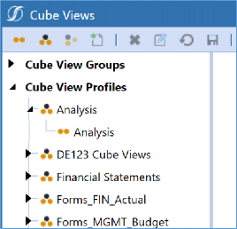
Figure 6.1
Okay, so you probably gathered that Cube View Groups are added to Cube View Profiles. And don’t let that picture fool you – you can, of course, have multiple Groups within one Profile – but let’s ask ourselves one important question: Why do we HAVE to do this?
The first reason is simple. You cannot start building a Cube View until a Cube View Group has been created. So, you are basically forced into it. In all seriousness, I cannot have any Cube Views floating out there on the page without being contained within a Cube View Group. So, my journey of creating Cube Views typically begins with me building a Cube View Group (first icon on the toolbar in Figure 6.2), after which I create a new Cube View underneath that Cube View Group (fourth icon on the toolbar in Figure 6.2).
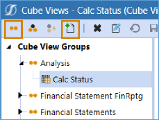
Figure 6.2
Okay, but why do we need Cube View Profiles? Cube View Profiles are what bring our Cube View Groups to Users. If a Cube View is not represented within a Cube View Profile, it cannot be run outside the Cube Views page. And most people will not have access to this page, meaning that you could have the most beautiful Cube Views out there, and no one would get to see them.
In general, Groups always need to be added to Profiles so that the artifacts you are building can be brought to the User. In training, I like to compare this to the little brother Randy from the movie A Christmas Story. There is a scene where Randy is all bundled up because his mom won’t let him leave the house until he is properly equipped for the cold day. Think of your Cube View Groups as little Randy; his big hilarious coat is the Cube View Profile, and his mom is OneStream. Mom won’t let him go outside until he is all packaged up. Hopefully, thinking of OneStream as your mom has warmed your soul a little bit.
At this point, the setup of your Cube View Groups and Profiles is almost complete except for one last item. Cube View Profiles (and Dashboard Profiles) have a special property called Visibility that controls where in the application the Cube Views can be incorporated. For example, this batch of Cube Views may be pulled into Excel to create a Cube View connection, added to a data adapter on the Dashboards page, incorporated into Form templates for data collection, or finally (gasps for air) added to the Cube Views pane in OnePlace to create an accessible Cube View Report repository. Requirements like these are controlled through the Visibility property. Choose any combination of Workflow, Excel, OnePlace, Forms, and Dashboards to meet your various needs.
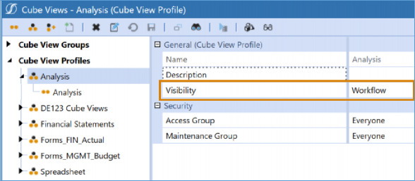
Figure 6.3
Now that we have explained the concept, how do we get organized with our Cube View Groups and Profiles? There is a section that goes into this quite heavily in the OneStream Foundation Handbook, so I will paraphrase it to ensure our messaging is consistent. One important quote I will pull from this section is, “The two main drivers of how you set these up are usage and security.” What the author is trying to convey to you here is that you can use this Cube View Groups and Profiles structure to your advantage.
Let’s look at Figure 6.4 to explain this.
Let’s say I need to build Forms that will be used by Users in Group1, Group2, Group3, and Group4. There are some Forms that everyone will need, there are some that only Groups 2 and 3 will need, and there are some that only Groups 3 and 4 will need. Structuring my Cube View Groups and Profiles – as per Figure 6.4 – will allow me to create the most maintainable structure that still meets my requirements. Use these groups before you start duplicating Cube Views.
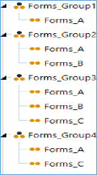
Figure 6.4
I have a few tips when creating Cube View Profiles that you can employ (or not, I can’t chase you down). They have helped me stay organized over the years:
Have a consistent naming convention.
A descriptive name that captures the purpose, process (Actuals/Budget), or business area of the Cube Views.
A suffix or prefix that tells you if the Cube View Group is used for data entry or reporting.
Apply a more informative Description than the long name.
Create a Cube View Group for row sharing.
Create a Cube View Group for column sharing.
Remember, your security settings are available on Cube View Groups and Cube View Profiles, if necessary.
Access Group: Can the User see the Cube Views?
Maintenance Group: Can the User edit the Cube Views?
If the Access Group is secured, but the Maintenance Group is set to ‘Everyone’, that will undo your security. Ensure that both properties are secured!
Fundamentals of Cube View Design and Build › Getting Started with Cube Views
Building your First Cube View
Now that we have explored Cube View Groups and Profiles, we shall look at how to build our first Cube View. So, what do we need to have a functioning Cube View?
A Cube View POV
Cube View rows
Cube View columns
To start our journey, let’s first understand how data is queried within a Cube View. I should remind you there are two ways that you can edit a Cube View, through the Designer and the Advanced tab. Both tabs contain all of the same properties; it is up to you which one you prefer to work within.
There is an order of operations when it comes to setting up your Cube View POV, rows, and columns, that you will want to remember:
Cube POV (this is controlled by the User)
Cube View POV
Cube View columns
Cube View rows
Cube View row overrides
Cube View column overrides
Now that we have our foundation, let’s configure that Cube View POV, as shown in Figure 6.5. If you have not been exposed to this yet, these are all the Dimension Members we need to configure in the background of our Cube View. I will give you a bold recommendation: set every Dimension Member. We can talk about making them dynamic a little bit later. You want to do this to ensure that no data is pulled based on the User’s Cube POV. Remember, we cannot control that!
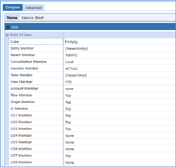
Figure 6.5
To get a functioning Cube View POV, you can do any of the following.
Set it manually by choosing a Dimension Member for every Dimension Type.
If you want to kick things up a notch, you can drag and drop your Cube POV into the Cube View POV.
Or… you can copy a Cube View POV from another Cube View, by right-clicking.
Next, we will build our rows and columns, which will override whatever is in our Cube View POV. Remember our order of operations; your rows will override your columns. These can be set up through the Rows and Columns pane shown in Figure 6.6. You can add rows or columns using the
+ and - sign icons and rearrange them using the arrows.
Next, we want to set the Dimension Type we wish to query. This is done using the highlighted pull-down menu. In this example, we chose Account. For rows, you can have up to four nested Dimension Types; for columns, you can have up to two.
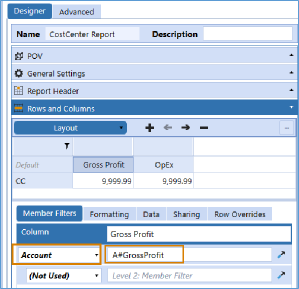
Figure 6.6
After this is set, we will want to create what is called a Member Filter. A Member Filter is used to query the Member or Members we need. The syntax of the Member Filter, at a minimum, must contain the combination of the Dimension Token, which denotes the Dimension Type and the Member name. Figure 6.7 shows an example of a simple Member Filter that would pull the Entity named TotSalesCC.
Figure 6.7
Figure 6.8 shows the Dimension Tokens for every Dimension Type in the OneStream application.
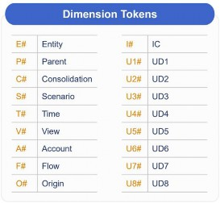
Figure 6.8
Now imagine this, you are a new Administrator or a User who was just given security access to the Cube View page. What is a Dimension Token? What does UD stand for? Is Flow a Dimension or a hot new dance move? Thankfully, the Member Filter Builder will make this syntax simple and digestible so that any newbie can craft their Cube View.
You can access the Member Filter Builder within any row or column through the hammer icon (you can see this in Figure 6.6, bottom right). You will learn that this tool is available across many places within the OneStream application. Figure 6.9 displays the Member Filter Builder.
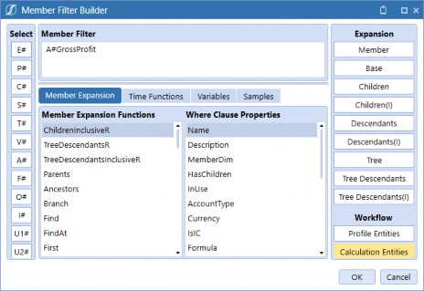
Figure 6.9
The Member Filter Builder is an extremely handy tool and a fan favorite. It is full of tool tips and samples that will make querying data in OneStream a breeze.
If we needed help writing the Member Filter A#GrossProfit (shown in Figure 6.9), we would start on the left-hand side of our Member Filter Builder and choose our Dimension Token A#. This would open a searchable pop-up window that shows the Account Dimensions created in the Dimension Library. This is great if I am new to OneStream, or if I am new to the application and have no idea what any of the Members are called.
We will end this section by just querying one Member at a time and kick things up a notch a little bit later. All these Components will get you a functioning Cube View.
Fundamentals of Cube View Design and Build › Getting Started with Cube Views
Starting with a Cube View Template
We have created a simple Cube View, but as we go through our Cube View construction, we will have many more things to create:
Consistent Cube View POVs
Parameters and Substitution Variables
Fine-tuned formatting
Specific settings
Headers and Footers
However, before we dive in with any of those concepts, we will want to foster consistency through Cube View templates. A Cube View template is actually just one lone Cube View, but it should contain all the common configuration(s) across a larger population of Cube Views.
If you set up a Cube View template with common Cube View POV, settings, and formatting, then – when you are ready to create a new Cube View – you can make copies from this template instead of starting from scratch. If you are a Consultant, sit down with your client and agree on consistent formatting and construction so you can create a sustainable Cube View template.
Fundamentals of Cube View Design and Build › Getting Started with Cube Views
Sharing Rows and Columns
Once we have an agreed upon our Cube View template (or templates), we can explore other ways to expedite our build. One common tactic is to share rows and columns. This is where creating a Report repository comes in handy. We typically see, in design sessions, that there is a laundry list of Reports that need to be created. If many of these are Cube Views, you are likely itching for options to kick off your build the right way. This is a great time to start identifying common rows and columns so they can be shared. Sharing rows and columns will reduce the amount of time you spend creating Cube Views as well as reduce future maintenance.
When you start your Cube View build, we typically recommend creating a Cube View Group that represents your rows, and one that represents your columns. You will also likely keep your Cube View template in one of these Groups. You may want to give the Cube Views themselves a naming convention that begins with a prefix and then provides an easy-to-decipher name. An example of what we usually see is shown in Figure 6.10.
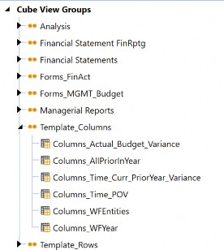
Figure 6.10
This way, you don’t have to repeatedly recreate the same Cube View rows or columns. You can add up to two Cube Views to the row and column sharing section.
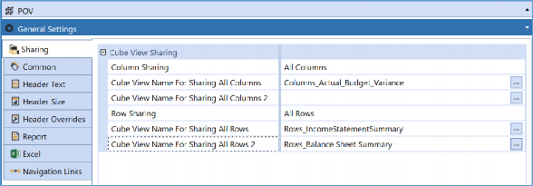
Figure 6.11
Moving on, how will maintenance work in the future? What if we need to update one of the rows/columns we are sharing? The update will affect the rows and/or columns for every Cube View referencing it. Typically, we want it to behave this way because that is what reduces our maintenance. However, what if we have a situation where that is not the case? How will we know (easily) what is impacted by our changes?
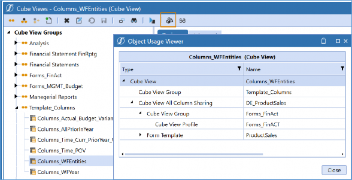
Figure 6.12
Figure 6.12 shows you a useful tool you can use to double-check if any artifacts are referencing the selected item. The highlighted icon is the Object Usage Viewer, and this is present on other pages in the application. In the image, we can see that this Cube View is being referenced for column sharing in DE_ProductSales, and that it has been added to the Form Template ProductSales.
In this section, we discussed how to start our Cube View build the right way. Let’s summarize with some of the advice we learned along the way:
Make a Report repository of everything you need to create.
Establish a Cube View template.
Organize and effectively name your Cube View Groups and Profiles.
Share rows and columns effectively.
We are going to layer in more and more complexities as this chapter progresses. By the end of this, you should be able to create a versatile, functioning Cube View that you can doll up with formatting.
Fundamentals of Cube View Design and Build
Member Expansions
If you are relatively new to Cube Views, the previous section hopefully got your feet wet with building something simple. If you are not new, maybe you got to hear a fresh take on something you have done a million times.
Now, we are ready to expand (pun intended) our Cube Views through Member Expansions. Member Expansions are something extremely important to our Cube View building experience because it gives us the opportunity to align with the hierarchy of our Dimensions. Expansions help expedite your Cube View build and reduce your future maintenance. If you spend a lot of time picking individual Members and manually adding many rows and columns, you are probably doing something wrong. Let’s work smarter, not harder!
Fundamentals of Cube View Design and Build › Member Expansions
Using Simple Member Expansions
If you are new to Member Expansions, Figure 6.13 shows the required syntax. This expansion is taking the Member TotSalesCC from the Entity Dimension and providing you with the Children of this Member.
Figure 6.13
Let’s bring up our Member Filter Builder once again and see how this can help us out. On the right side of Figure 6.14, you will notice that we have our common expansions. Check out the Design and Reference Guide for handy tool tips here. I would say the best way to learn them is to get in there and play around a little bit. I personally practice with the Time Dimension because it is (almost) always the same in every application.
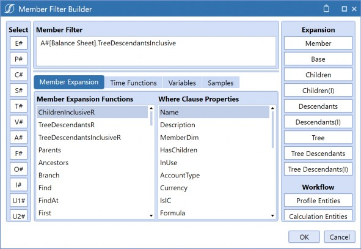
Figure 6.14
Simple Member Expansions are something that many people learn in their OneStream careers. They ensure that you are creating a Cube View that is tied to the Dimension Library. Let’s say I work for a company that sells food, and this was built in my UD1 Dimension. If I wanted to pull sales per fruit, I wouldn’t want to create a Member Filter that is U1#Apples, U1#Bananas,
U1#Cherries, etc. I would want something dynamic like U1#Fruit.base. This way, if I expand my business to add Coconuts one day, it will be added to my Report without any Cube View intervention required.
As we continue, we are going to get into some heavier expansions. I am a proponent of creating the most dynamic Cube Views possible, but you may prefer to keep things simple. You may have other people join the Cube View building squad, and expansions like Base, Children, and Descendants, are common enough terms for people to follow.
Fundamentals of Cube View Design and Build › Member Expansions
Advanced Member Expansions
Sometimes a simple Member Expansion might not cut it. Do not give up and start cherry-picking individual Members, though. We may have to start getting creative and build something more robust. Don’t worry; the Member Filter Builder is still by your side, with many options for you to try. Honestly, complex expansions are where things start to get a little fun in Cube View building; this is where the puzzle lovers shine!
So, let’s start with an easier one to get the party started: reverse expansions. In the center of your Member Filter Builder (Figure 6.15), we can see that three expansions end with the letter R. These expansions are not for pirates; the R stands for ‘Reverse’ and behaves as you would expect. They reverse the order of the structure to display Parent-level Members underneath their Children. There are many OneStream clients who want to see their Reports displayed this way.
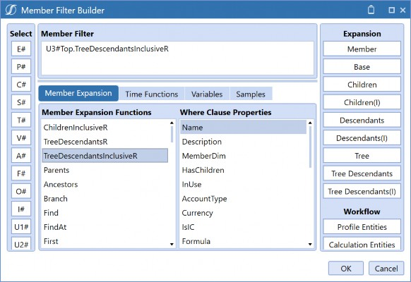
Figure 6.15
That one was easy! What else can we try? Let’s move from the Member Expansions tab in the Member Filter Builder to broaden your horizons on what you can really do here. Figure 6.16 displays the Samples tab in the Member Filter Builder, and the screenshot shows you not only that there is a list of the same Member Expansions here, but the extremely handy tool tip that explains what each of them does. Simply double-click on the expression, and it will place the syntax in the tool tip into your Member Filter.
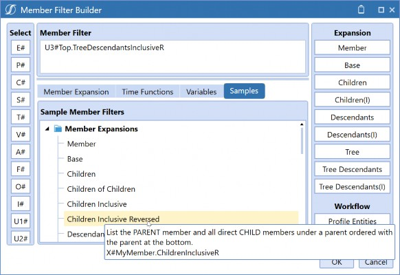
Figure 6.16
I won’t go through each of them (and they can be found in the documentation), but I want you to open your mind to the possibility of trying something a little more advanced to ensure that you are thinking dynamically. Let’s say we have a situation where we need to create a Report on Sales Region, and that is represented in our UD2 structure. Figure 6.17 illustrates the hierarchy we can refer to.
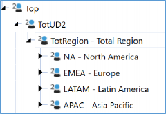
Figure 6.17
The reporting requirement is simple, we want to pull the Children under TotRegion, but we want to see Base Members under NA and the Children under EMEA. This is what I would do to meet this requirement:
U2#TotRegion.children.Branch(Find(NA).base, Find(EMEA).children)
The Branch expansion will allow us to do a combination of expansions and break out the levels in the hierarchy we need. So, it pulls the Children under TotRegion – which would be NA, EMEA, LATAM, and APAC – but when it locates the Member NA, it provides the Base Members, and when it finds the Member EMEA, it returns the Children.
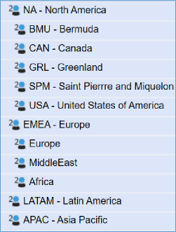
Figure 6.18
Moving on, Extensibility is an important Dimension design tactic that is featured in many OneStream applications. Typically, it incorporates multiple Cubes linked together (if you read the OneStream Design Handbook, our documentation, or have taken some of the Navigator course, you may know this concept as a Super Cube). Extensibility raises some questions when it comes to reporting, but it ends up being quite intuitive, and for the most part – through simple expansions and suppression – you can see the information you need. However, if this is ever not the case, the
.options expansion may be able to help.
Figure 6.19
Let’s say my Net Sales Account has the Base Members shown in Figure 6.19. This list would populate when I pull A#NetSales.base for my top-level Cube.
Now, the Members 40000_100 to 40000_103 belong to Child Cube 1, and the Members 40000_200 to 40000_203 belong to Child Cube 2. If you query an Entity from Child Cube 1, the cells for Members 40000_200 to 40000_203 will be invalid and you can, therefore, suppress them out (we cover suppression later in this chapter). If you query an Entity from Child Cube 2, the cells for Members 40000_100 to 40000_103 will be invalid and you can, therefore, suppress them out. This is usually how you want this to behave because Extensibility is very smart!
However, what if you didn’t want things to work that way? Typically, I wouldn’t recommend this, but every use case is different, so far be it from me to judge! We have had situations where someone says, “I only want to see the Base Accounts for Child Cube 2” regardless of the Entity chosen. What do we do? This is where the .options expansion comes in handy. I would write something like this:
A#40000.base.options(Cube = ChildCube2)
No matter what Entity I pull, I will only see the 40000_200 to 40000_203 Members, depending on any suppression settings I may have. Hopefully, looking at these examples opened your eyes to the possibilities of expansions. I would still recommend keeping things as simple as possible, but you have a lot of options, and choosing a laundry list of individual Members should be far out of your mind.
Fundamentals of Cube View Design and Build › Member Expansions
Where Clauses
We can’t talk about flexibility without looking at Where clause Expressions. Where clauses can tack onto your Member Expansions to provide additional logic in a pinch. Your trusty Member Filter Builder is by your side with your Samples tab, as shown in Figure 6.20.
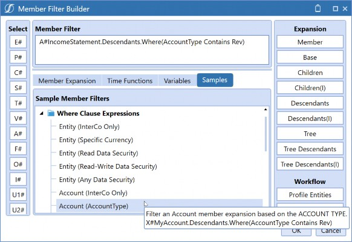
Figure 6.20
This is a common example I see, where we pull the entire Income Statement but only filter the Revenue Accounts. This looks towards the Account Type properties, set on the Dimension Library, but there are many more options. We can use specific expansions for Entity and Account properties as well as a whole slew of generic properties that can be applied to all Dimensions. We could use a Where clause to return only Entities with a local currency of USD, or Accounts that are marked as IsIC (Intercompany). More generic options, meanwhile, allow us to pull Members under any Dimension where the description contains the word “clubs” or something like that. My personal favorite is to filter based on Dimension Member text properties. Here, we have the luxury to span
Dimensions, grab specific properties, and employ logic like contains / startswith / doesnotcontain, or combine multiple Expressions using and / or.
Fundamentals of Cube View Design and Build
Performance Considerations
We have looked at some of the basics for getting our Cube Views functioning. We learned that we should think of our dimensionality when building Cube Views, whether that means coming up with some creative expansions, parameterization, suppression options, or turning to dimensionality and adjusting hierarchies if necessary.
Before we move into the formatting chapter, we need to address one further thing… a great Cube View experience is not only something that is easy to read but also something that runs quickly. Typically, at OneStream, we use the benchmark of 10 seconds for a Cube View to render. Of course, there are always exceptions to the rule, but any long-running Cube Views may require a bit of investigation.
When it comes to performance considerations, people often chase the fastest Calculation, Consolidation, or Import, but slow reporting performance is something that can negatively impact your User Experience. So, are Reporting and Consolidation performance related? They can be, but there are other factors that impact reporting performance. Are there things we can do in our Cube View Design to improve this? You bet!
Fundamentals of Cube View Design and Build › Performance Considerations
Recapping the Data Unit
I am going to step away from reporting for just a moment to give you a little back story on the Data Unit. I promise this all ties together and will hopefully help you to understand that your Dimensions, Data, and Calculations are all linked to your Reports.
If your experience of working with OneStream has been a bit more technical, you have probably heard of application design tactics like:
Watch the size of your Dimensions.
Use Extensibility.
Explore Analytic Blend.
Write Calculations thinking of the Data Unit Calculation Sequence (DUCS).
Consider Aggregation instead of Consolidation (if applicable).
Break up or automate your Consolidation/Calculation.
Partition when importing large amounts of data.
Explore Direct Load.
Explore Hybrid Scenarios.
All these items have evolved as we get smarter when working within OneStream and as the product evolves to cater for more use cases and audiences. These features and design tactics have formed over the years to address a common goal: to provide a variety of Users with the best application performance and experience possible. They do so by focusing on the Data Unit, which is core to OneStream’s functionality and design.
If you are not familiar with the concept of the Data Unit, I would recommend diving into the Designing and Application Course on Navigator (our online learning portal) or the OneStream Foundation Handbook. There is a lot of great information on how it operates, and what we need to do to ensure it is protected to ensure a performant application.
If you are new to the OneStream community, this may sound a bit technical; don’t worry, I will give you a brief synopsis.
There are three levels to the OneStream Data Unit: Level 1 is the Cube Data Unit, Level 2 is the Workflow Data Unit, and Level 3 is the Workflow Channel Data Unit. Most of the time, when people say “Data Unit” they are referring to the Level 1 Data Unit, but really all three levels make up one overarching concept.
The Level 1 Data Unit is the largest unit of work that is responsible for how data is cleared, loaded, copied, calculated, translated, and consolidated. So, the unit of work that I am referring to here is cultivated through your Level 1 Data Unit Dimensions: Cube, Entity, Parent, Consolidation, Scenario, and Time. When you define a Member from each of those Dimensions, you are querying a specific Data Unit.
So, what are the other Dimensions called? I have heard them referred to as the Account Type or Account-Level Dimensions: Flow, Account, Origin, UD1-8. The only Dimension you won’t find in either is the View Dimension.
And if you were curious, the Level 2 Data Unit (aka the Workflow Data Unit) adds in the Account Dimension, and the Level 3 Workflow Data Unit (aka the Workflow Channel Data Unit) adds in a UD Dimension of your choosing. These two levels of the Data Unit are how data is cleared, loaded, and locked.
When we speak of the Level 1 Data Unit, we typically try to protect it as much as possible with our Dimension and Cube design. I think of the Account Type Dimensions as the amount of work that my Data Unit Dimensions must go through. Often, when we consolidate or calculate, we are trying to protect our Data Unit from running too many times for too many Account Type Dimensions.
What does this have to do with our innocent Cube Views? Well, just like when you run a Calculation, a cell query in a Cube View could lead to querying many more records than you initially think.
Let’s say I am querying one Base-level Entity, for one month (in a monthly application), at local currency, for the Actual Scenario Member. There is an associated number for records behind this cell that is driving our final value. So, one cell at a low-level Data Unit can have many records behind it. Imagine what happens when we start pulling multiple Data Units or ones with Parent Entities! There is a lot more being queried than you think.
Building a larger Cube View, in general, may slow performance, and if this Report pulls a lot of records, this will make it even slower. In turn, it is possible to have a Cube View that isn’t that large but still renders slowly. What could be causing this? As we explained, if this Cube View is pulling a lot of Parent Members, it could retrieve more records than you think, but there are a few other things that could also be happening. We will go into these in the next few sections.
Fundamentals of Cube View Design and Build › Performance Considerations › Recapping the Data Unit
Dynamically Calculated Data
If you are an avid Financial Calculation writer, you may have encountered the concept of Dynamic Calculations. These tend to be a fan favorite because they can be simple to write, and they run at no cost to your Consolidation times. A dynamically calculated Member is written within the Dimension Library within the Account, Flow, or any of the UD Dimensions. You can commonly see these representing various Ratio Accounts or any commonly calculated reporting variances (usually represented in UD8). But people come up with a variety of reasons to work these into their designs.
How do they work? As I mentioned, they do not run upon Calculation, meaning they will not impact your Consolidation times (although they will impact your Report rendering times). These Calculations run when they are queried; they are commonly built for Reports and center on a concept commonly referred to as ‘calc-on-the-fly’.
Now, we mentioned dynamically calculated Members, but what about Calculations directly in your Cube View? If you don’t know what I am referring to, there are plenty of examples available to you on how to write these in your Samples tab in the Member Filter Builder, shown in Figure 6.21. You can create your own calculated rows and columns using GetDataCell Expressions and Column/Row Expressions.
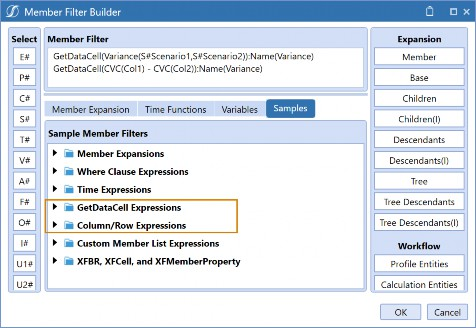
Figure 6.21
Dynamically Calculated Members, GetDataCell Expressions, and Column/Row Expressions function similarly. That is because they all use a GetDataCell to essentially query the results you need. Really, the choice between each of them comes down to your preference and what will facilitate the best maintenance experience going forward.
When it comes to maintenance, usually keeping your dynamic Calculations in Members is the most frugal. If you have similar Calculations across many Reports, they can be easily accessed and maintained in a repository. Therefore, many people opt to use UD8 as a Dimension entirely dedicated to reporting Calculations.
This will also allow you to drill down on any calculated data point through the Calculation for Drill Down property as well.
But you may choose to write your Calculations directly on the Cube View if you only have a few and they are unique. This may also be an option if you don’t have access to build calculated Members in your Dimension Library, or if you are a fan of Column/Row Expressions.
Column/Row Expressions allow you to write Calculations simply if you would like to just say Column1 + Column2, instead of hunting down the Member name. Many people like them because of their friendly syntax.
Back to performance. Does this mean we should avoid dynamically calculated data? Of course not! You likely won’t see a significant impact on your reporting performance with just a calculated row or column here and there, and honestly, these are commonly required and a great alternative to storing every Calculation. Just be aware of how they work. I will say, though, that if you have an extremely large Cube View, pulling a lot of Data Units and records, and then you pop in a raft of dynamically calculated data, your performance will suffer.
Fundamentals of Cube View Design and Build › Performance Considerations › Recapping the Data Unit
Aggregated Data
You may not realize this, but even if you stripped your Cube View of all Dynamic Calculations, you will not eliminate all dynamically rendered data. One thing that tends to slow Cube View performance is the amount of aggregated data. (In this case, I am not referring to the aggregated Consolidation Dimension, that is a different concept.)
What other data gets queried dynamically? All Parent Members in any Dimension, besides Entity and Scenario, are dynamically rendered. Let’s say we are looking at a Form, and we are querying A#NetSales and all the Members under it. If we key in data to a Base Member and save it, we will immediately notice my NetSales Member’s data change. That’s because this Member is dynamically aggregated. All Parent Members in Account, Flow, Intercompany, Origin, and UD1-8 operate this way.
Why is this a problem? Because this is a piece of work that our Data Unit must do. So, if I am querying a Report that pulls all top-level data across all these Dimensions, my poor Cube View is aggregating all that data at run-time. That is how a Cube View – which may not look too large – starts to run slowly. You could be aggregating a lot of high-level Members and spanning many Data Units, which means the amount of work and number of records is far greater than you think.
Other Members that naturally run dynamically are the majority of your View Dimension (only YTD is stored; if you key into Periodic, this is still true), and – depending on your application setup – some of the Members in your Consolidation Dimension (you can set up your Cube to store the Share Member).
Any of these items mean that any performance gains realized upon Calculation or Consolidation are passed to your Cube View. If a Cube View Report with this situation is starting to slow, you may explore chopping up the Report, utilizing the share data bindings within Hybrid Scenarios, or shipping your Cube View to Users via email through the Parcel Service, which – if you are unfamiliar – is a Report distribution tool that can be downloaded and deployed from the MarketPlace.
Fundamentals of Cube View Design and Build › Performance Considerations
Suppression
Another concept that relates to our Data Unit, and which impacts Cube View building, is sparsity. We see sparsity when the Data Unit has sparsely populated data intersections across the Account Type Dimensions (Account, Intercompany, Flow, and User-Defined). This is an important issue we must watch out for when designing our Dimensions and Cube Views. Why are we so worried about this in reporting? The absence of data records can impact the legibility and User Experience of the Report.
This, of course, should be mitigated as much as possible using Extensibility, Cube Design, and Analytic Blend, but there may be pieces of it that are unavoidable. Suppression is applied to Cube Views to improve the overall User Experience. It will not only provide the obvious impact of pulling out unnecessary rows that have no data but can also greatly improve your Cube View performance.
Fundamentals of Cube View Design and Build › Performance Considerations › Suppression
Row and Column Suppression
Let’s start with row and column suppression since this is typically the easiest to get our heads around. Think of it this way: suppression is the act of removing cells in a Cube View based on certain criteria. We may do this to remove any information that is irrelevant to the User and improve their experience when viewing/analyzing the Report. The criteria commonly revolve around whether the row or column is invalid, zero, contains no data, or is under a certain threshold.
I’ll give you a quick run-through. Suppression is applied on the individual rows and columns of the Cube View. Commonly, people will suppress invalid rows or even columns and, usually, these are invalid intersections due to Members not being present in a queried Cube, or constraints being violated. Applying invalid suppression is a great tactic to improve the performance and readability of your Reports or even Forms, especially with a multi-faceted User population.
Typically, we see invalid intersections in Vertical Extensibility (extending per Entity Dimension). This happens when certain Members prove invalid for certain Entity Members. That’s a good thing! This concept is addressed heavily in the OneStream Foundation Handbook, but what you need to retain here is simple: invalid Members are usually created due to your Dimension design and there is a reason why they are there.
We want to display information that is only relevant to certain Users and, therefore, may not be important to others and should be suppressed out. This is the beauty of Extensibility. For example, we can extend our Income Statement so certain Members are relevant with certain Entities and – when it comes time to create the Report – we can simply pull the entire Income Statement, allow our Users to choose their Entity (or perhaps security controls what they can choose), and the same Report will show each User only what they need to see if I have suppressed my invalid Members.
No data and zero suppression tend to be easily confused. No data means that no data record is present behind the cell; 0 is, in fact, a record. We typically recommend that people try to limit 0s as much as possible because they are data points and will impact Report and Consolidation performance. Zeros do happen, but you may want to investigate why you have them. It could be due to loading zeros, or perhaps a bad rule that is writing 0 or near-0 data into your Cube. If so, I would recommend tightening this up.
If any of this advice just scared you, there is a little trick you can do in your Cube Views. Let’s say you have some heavy number formatting, and you are not sure if that 0 you are looking at is really a zero, or if it is no data, or you are scaling to the millions and it is a real number. You can right-click on any cell in your Cube View and View the Cell Status to see the Cell Amount and the Storage Type.
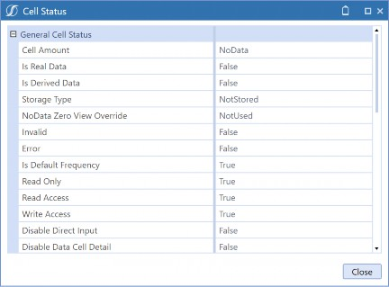
Figure 6.22
The other thing that might have piqued your interest is my comment on having too many 0s. How can we easily see that within our Cube View? You are in luck, for if you right-click on a given cell once again, you can also pull the Data Unit Statistics.
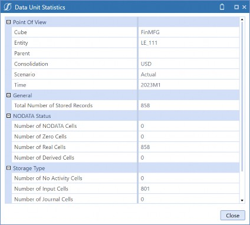
Figure 6.23
This window is giving us a lot of great information. Here I can see the Data Unit I am querying in this cell, plus the total number of records within this Data Unit. That means – when my Cube View is pulling this one cell of information – it is pulling all that information and applying any dynamic Calculations or Aggregations. That little cell is doing a lot of work!
If we keep looking at the properties, we can see the number of Zero Cells we have within this given Data Unit. Our typical recommendation is that fewer than 10% of your cells should be zero. This could be a signal to check some other areas in your application, but when we are speaking about Cube Views, this may be something we want to suppress out by applying zero and/or no data row/column suppression.
With our zero suppression, we also have the option to apply a Zero Suppression Threshold. This is commonly done when you are using scaling on a Cube View. To apply this, we can key in our desired threshold in the Zero Suppression Threshold property (this is an absolute value). We also need to set our Suppress Zero Rows/Column to True for this to take effect.
There are two more properties that are meant to provide flexibility with these suppression settings by Parent Members and columns. The Use Suppression Settings on a Parent row/column is a somewhat misunderstood property and causes some head-scratching in the Report building community. It’s very easy and handy, though. This property relates to the zero, no data, and invalid settings and decides if these settings should be applied to the Parent Members in the Member Filter for this row or column.
I will give you an example. Let’s say we are building an Income Statement Report pulling A#NetSales.ChildrenInclusive in the rows. Usually, if we have suppression turned on, we will want NetSales and all its Children to heed the settings applied. However, maybe we want the Parent Member to show up even if it had no data. It depends on the situation but, sometimes, this can really help with readability. Set this property to False, and the NetSales Parent Member would still show up.
The last property we will address is called Use to Determine Row Suppression. This one is only available on columns and allows you to better define how to apply row suppression. If you have a Cube View with multiple columns, you may not want the data in all these columns to be considered for suppression. You can ‘turn off’ certain columns – from being considered – by setting this property to False.
Fundamentals of Cube View Design and Build › Performance Considerations › Suppression
Allowing Users to Modify Suppression
Sometimes, we tick and tie every suppression setting, but this does not provide enough flexibility for our Users. Maybe we have a Cube View (usually added to a Dashboard) that is used for data entry for Planning and the Form is pre-seeded with data. Suppression is commonly applied to the Form to ensure better readability and usability. However, Users need to enter data for something that currently doesn’t have any, and suppression is eliminating this row! What do we do? Turn suppression off? Inform your Users that they can search based on Member names and descriptions within the rows of any Cube View? That would work, but we have a few more options that may provide a better experience.
Our first option takes us back to the General Settings of the Cube View under the Common items. The Can Modify Suppression property can be set to True and allows Users to choose whether rows are suppressed from the Data Explorer Grid. This property is shown in Figure 6.24.
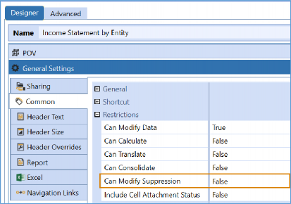
Figure 6.24
Users turn on and off their suppression settings in the Data Explorer Grid of the Cube View, through the icon displayed in Figure 6.25.
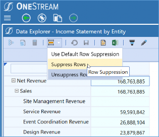
Figure 6.25
The next option is a bit more intricate, but great if we want to apply a bit more tact to our Cube View than simply turning all the suppression on or off. The Allow Insert Suppressed Member setting is available on the individual rows of the Cube View and allows Users to insert specific Dimension Members based on the settings defined. Choose this if you want to allow this property for all expansions of the row, just the first one (choose innermost for this one), or just the nested ones (expansions 2-4 on the rows).
This is particularly useful in Planning use cases, specifically with data entry. For example, we may build a Form where a User needs to enter sales data per product. If a product is in our rows, to improve the User Experience we may apply row suppression to a Calculation that pre-populated some data. But what if our User needs to access a product that was not populated with data? They would not see it due to the suppression. This is a situation where you may want to explore this feature and allow the User to take some control of what they can see.
An orange tick mark will be displayed at the bottom of the individual rows, as shown in Figure
6.26. Users can now right-click on this orange tick mark and choose Insert Suppressed Member. A pop-up window will then display the Members they are allowed to add. A User can only add Members with the expansion I have applied to the rows, so we don’t have to worry about them venturing into other areas of the application. Security settings will still be applied here, as well.
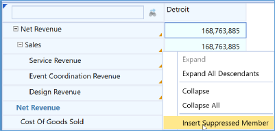
Figure 6.26
Fundamentals of Cube View Design and Build › Performance Considerations › Suppression
Sparse Suppression
We learned that sparsity is something that we can mitigate through our application design. However, even with an optimal design, sparsity can still occur if a large Report is required that pulls in a lot of Dimensions. Suppression settings can help improve reporting performance if this is the case.
If your row and column suppression settings are not cutting it, and you have some large Reports exhibiting poor performance, Sparse Row Suppression may be for you. Due to widespread sparsity, the Report could be returning many NoData records and taking a long time to run. This tends to surprise people, but – if this is the case – enable the Allow Sparse Row Suppression property (shown in Figure 6.27) and see if this helps your Cube View performance.
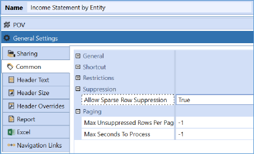
Figure 6.27
So, what does this do differently from regular suppression? This property changes how our Cube View renders. It evaluates all the data records of the Cube View intersections at one time, and filters records with no data (not zeros). So, as opposed to reading the Cube View line by line, it consumes the entire data set and quickly eliminates any unneeded rows.
Many people immediately think they should always have Sparse Row Suppression on. Is this a good practice? Our typical recommendation would be to agree with you. However, there are some considerations you may want to watch out for. The biggest barrier to using Sparse Row Suppression is the use of dynamically calculated data through any GetDataCells Expressions (Dynamic Calculations). Technically, these are not stored data points and can cause errors to display.
Thankfully, this only applies to your columns and can be avoided by correctly utilizing the Allow Sparse Row Suppression settings. This requires venturing back to our Column Suppression settings and utilizing that last property; you may want to find your dynamically calculated columns and turn this property to False. Then your Cube View will run smoothly, and you will have the best of both worlds.
Fundamentals of Cube View Design and Build › Performance Considerations
Cube View Paging
If you have a long-running Cube View, you may want to jump to immediately exporting it to Excel or PDF. But you must run it as a Data Explorer Grid first. Sometimes, people get a little impatient with this, so applying Cube View Paging can alleviate the time spent waiting for the Data Explorer Grid to return. We have observed these settings enhance the performance of Cube Views containing more than 10,000 unsuppressed rows. The purpose of paging is to protect the server from large Cube Views that could affect application performance.
By default, a Cube View will attempt to return up to 2,000 unsuppressed rows within a maximum processing time of 20 seconds. You can adjust these settings through the General Settings properties. The -1 denotes a default setting, but you can key in your own Max Unsuppressed Rows Per Page or seconds to process.
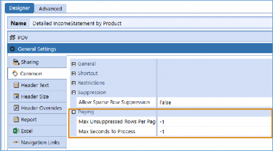
Figure 6.28
Fundamentals of Cube View Design and Build
Conclusion
In this chapter, we learned that we have a variety of expansions to ensure that our Cube View maintenance is kept to a minimum. But if you are constantly bending over backwards, and twisting and turning with every expansion, you might need to look at your Dimension Library. Remember, you want to ensure your Dimension design considers the Reports you need to pull. It’s a Cube View; don’t pull a muscle!
What if you have bigger problems? What if Dimension structures are different, or there are total Members that you keep having to calculate? Then you are likely going to want to use an alternate hierarchy, and these can be neatly created within any of your Dimensions. Consider this approach, in particular, if you are constantly creating total Members; alternate hierarchies are typically much easier to create than Calculations and will be more dynamic.
What if we need to create Calculations in a Cube View, though? This can typically be done with a GetDataCell directly in a Cube View, but if you are constantly trying to recreate the same Calculation – well, you guessed it – turn to the Dimension Library! You can create Dynamic Calculations in your Dimension Members (usually Accounts and UD8) that can be referenced for Cube Views. The best part is that you can even add Calculations for drill down to enhance the End-User Experience.
Slow performance can be a bummer for Users, but a large, cumbersome Cube View is also not very legible. Is someone really peeling through all this information? If the answer is truly yes, we can get creative and utilize a few tools to help this along. Things like row/column suppression, sparse suppression, and paging within OneStream will help to make a large Report less cumbersome. And, if all else fails, a great option is to assemble these Reports into Report Books and use the OneStream Parcel Service found on the MarketPlace to ‘ship’ long-running Reports to an email address (or addresses) of your choosing.
As we continue through our book, we will learn a little bit more about Cube Views and other ways they can be configured. A little later, we will dive into further reporting options and start to understand how they can be used to meet common requirements or perhaps used to improve reporting performance.